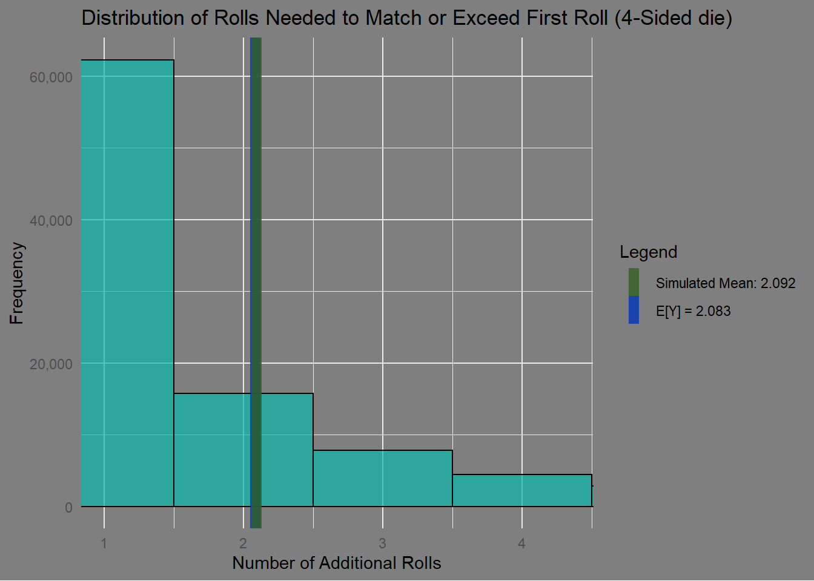

if (!require("glue")) install.packages("glue")
library(glue)Practice Problem
Background
My practice problem for the 9715 Final is from Ch. 9.9 Q. 13 in Blitzstein Hwang Probability pdf (page 446).
It is a conditional probability problem.
Practice problem
A fair 4-sided die is rolled once. Find the expected number of additional rolls needed to obtain a value at least as large as that of the first roll.
Answer:
\(E[Y]=\Sigma^4_{j=1}\frac {1} {j}=\frac {25} {12} = 2.083\)
Original Question
A fair 6-sided die is rolled once.
Find the expected number of additional rolls needed to obtain a value at least as large as that of the first roll.
\(\mathbb{E}[\text{\# of additional rolls}]\)
Solution
\(X\) = Result of first roll
\(X \sim DiscreteUniform(\{1,2,3,4,5,6\})\)
\(Y = \text{\# of additional rolls} \geq X\)
\(Y|X=k\sim(\frac {7-k} {6})\)
\(k\) = outcome of the first roll of the die, \(X\).
\(k \in \{1,2,3,4,5,6\}\)
\(7\) represents the number above the max roll, or \(6+1=7\)
\(6\) represents the total number of outcomes
Once the first roll \((R_1)\) where \(X=k\) is known, the probability of rolling a number at least as large as \(k\) on subsequent rolls is:
\(P(R_1)=P(X=k)=\frac {1} {6}\)
\(P(R_2 \geq k) = \frac {7-k} {6}\)
So for example, if \(R_1=X=k=1\), then the probability that \(R_2 \geq 1\) is \(\frac {7-1} {6} = 1.00 = 100\%\), because \(1\) is the minimum number on \(R\)’s support.
If \(R_1=3\), then \(P(R_2 \geq 3) = \frac {7-3} {6} = \frac {4} {6} = \frac {2} {3} \approx 0.667 = 66.7\%\), which makes sense:
\(\mathbb{I}(R_2 \geq 3) \begin{cases} 1 & \text{if } Y \in \{3, 4, 5, 6\} \\ 0 & \text{if } Y \in \{1, 2\} \end{cases}\)
We can have \(4\) true values (\(t\)) and \(2\) false (\(f\)) values in a space of \(6\) (\(t+f\)) values. \(\frac {t} {t+f} = \frac {4} {4+2}=\frac {4} {6}=\frac {2} {3}\)
We need to find the Expected Value of \(Y\) to answer the question.
To find \(E[Y]\), we need to find the expected value of \(Y\) at various points \(X\).
We established the conditional distribution of \(Y|X=k\sim(\frac {7-k} {6})\) which is a finite distribution.
So the expected value of \(Y\) is the sum of the expected value of \(Y|X=k \times P(X=k)\)
We know the \(P(X=k)=\frac {1} {6}\).
Using the Law of Total Expectation:
\(E[Y]=E[E[Y|X]]\)
\(X\) is a Random Variable
\(X \in \{X_1,X_2,\dots,X_n\}\)
\(Y\) is a Random Variable \(dependent\) on \(X\)
Plugging our variables into the formula (and inverting the conditional distribution \(\frac {k-7} {6}=\frac {6} {7-k}\) to simplify):
\(\Sigma^6_{k=1}\frac {6} {7-k}\times\frac {1} {6}=\Sigma^6_{k=1}\frac {1} {7-k}\), replacing \(\frac {1} {7-k}\) with some variable \(j\):
\(E[Y]=\Sigma^6_{k=1}\frac {1} {j}=\frac {1} {1} + \frac {1} {2} + \frac {1} {3} + \frac {1} {4} + \frac {1} {5} + \frac {1} {6}=\frac {60} {60} + \frac {30} {60} + \frac {20} {60} + \frac {15} {60} + \frac {12} {60} + \frac {10} {60} = \frac {147} {60} = \frac {49} {20} = 2.45\)
ey <- round(((1/1) + (1/2) + (1/3) + (1/4) + (1/5) + (1/6)),3)Expected Value of Y: 2.45Using R to Simulate Expected Value
Simulating \(Y|X=k\) rolling a 6-Sided Die
We simulate 100,000 times in the below code to count how many times it takes for next_roll \(\geq\) first_roll. The result is stored in a count which is updated until \(Y \geq X=k\).
Once 100,000 simulations have been run, we take the mean of all counts from the simulations, and that’s our simulated Expected Value.
if (!require("ggplot2")) install.packages("ggplot2")
if (!require("scales")) install.packages("scales")
library(ggplot2)
library(scales)# create a function to simulate 100,000 simulations
simulate_rolls <- function(n_sim = 100000, sides = 6) {
results <- numeric(n_sim) # Store results
for (i in 1:n_sim) {
first_roll <- sample(1:sides, 1) # First roll
count <- 0
repeat {
count <- count + 1
next_roll <- sample(1:sides, 1)
if (next_roll >= first_roll) break
}
results[i] <- count
}
return(mean(results)) # Return the average number of rolls
}
# Run simulation for D6
set.seed(42)
roll_6 <- round(simulate_rolls(),3)The Expected Value of Y is 2.45
'Rolling' 100,000 times we get an expected value of: 2.453
Which has an absolute difference from the Expected Value of Y of 0.003
Which is a percentage difference of 0.122%.
Simulating \(Y|X=k\) by rolling a 4-Sided Die
Doing the same thing as above but with our practice problem.
Code
simulate_d4 <- function(n_sim = 100000, sides = 4) {
results <- numeric(n_sim)
for (i in 1:n_sim) {
first_roll <- sample(1:sides, 1)
count <- 0
repeat {
count <- count + 1
next_roll <- sample(1:sides, 1)
if (next_roll >= first_roll) break
}
results[i] <- count
}
return(mean(results))
}
# Run simulation for D4
set.seed(42)
roll_4 <- round(simulate_d4(),3)The Expected Value of Y is 2.083
'Rolling' 100,000 times we get an expected value of: 2.092
Which has an absolute difference from the Expected Value of Y of 0.009
Which is a percentage difference of 0.432%.Graphing
Let’s take a quick look at the distribution of the 100,000 simulations.
Code
simulate_d4_full <- function(n_sim = 100000, sides = 4) {
results <- numeric(n_sim)
for (i in 1:n_sim) {
first_roll <- sample(1:sides, 1)
count <- 0
repeat {
count <- count + 1
next_roll <- sample(1:sides, 1)
if (next_roll >= first_roll) break
}
results[i] <- count
}
return(results)
}
# Run simulation for D4 and store full results
set.seed(42)
simulation_results <- simulate_d4_full()
# Calculate standard deviation and range for 1 standard deviatio
sim_mean <- mean(simulation_results)
sim_sd <- sd(simulation_results)
lower_limit <- sim_mean - sim_sd
upper_limit <- sim_mean + sim_sd
# Calculate the percentage of simulations within 2 standard deviations
within_range <- sum(simulation_results >= lower_limit & simulation_results <= upper_limit)
percent_within_range <- round((within_range / length(simulation_results)) * 100, 2)The sample mean is 2.092 while the sample standard deviation is 2.249.
The percentage of simulations within 1 standard deviation of the mean is: 90.34%I’m limiting the below histogram to all rolls within 1 standard deviation of the mean, because once we go to 2+ standard deviations, it goes out pretty far and frankly the graph doesn’t look as good. Just keep in mind the rolls go out to the max end of the band below:
Code
# find min-max
band <- glue("{{{min(simulation_results)}, {max(simulation_results)}}}")
cat(glue("Simulations occur in a band of: {band}"))Simulations occur in a band of: {1, 38}Finally, below is the histogram printout.
Code
# Plot histogram
ggplot(data = data.frame(rolls = simulation_results), aes(x = rolls)) +
geom_histogram(binwidth = 1, color = "black", fill = "#0ab8ab", alpha = 0.7) +
geom_vline(aes(xintercept = 2.083, color = "Theoretical Value"), linetype = "solid", size = 3, alpha = 0.8) +
geom_vline(aes(xintercept = sim_mean, color = "Simulated Mean"), linetype = "solid", size = 3, alpha = 0.8) +
scale_color_manual(
name = "Legend",
values = c("Theoretical Value" = "#0035b8", "Simulated Mean" = "#316121"), # can't figure out why lines are off
labels = c(
#expression(E[Y] == 2.083),
glue("Simulated Mean: {round(sim_mean, 3)}"),
"E[Y] = 2.083"
)
) +
# Restrict x-axis to 1 standard deviation
coord_cartesian(xlim = c(1, upper_limit)) +
scale_x_continuous(breaks = seq(1, upper_limit, by = 1)) +
scale_y_continuous(labels = label_comma()) +
labs(
title = "Distribution of Rolls Needed to Match or Exceed First Roll (4-Sided die)",
x = "Number of Additional Rolls",
y = "Frequency"
) +
theme_minimal() +
theme(
panel.background = element_rect(fill = "gray50", color = NA),
plot.background = element_rect(fill = "gray50", color = NA),
legend.background = element_rect(fill = "gray50", color = NA)
)
Most simulations end with \(Y = 1\), then \(Y = 2\), and so on, with the probability of \(R_n \geq X=k\) getting smaller until the end of the band.
The simulated mean and expected value are also graphed on the chart.